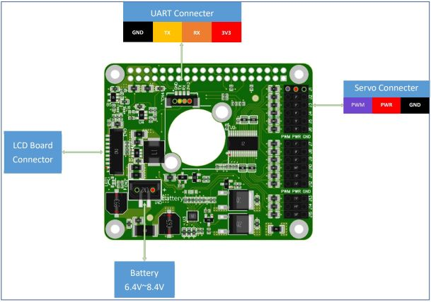
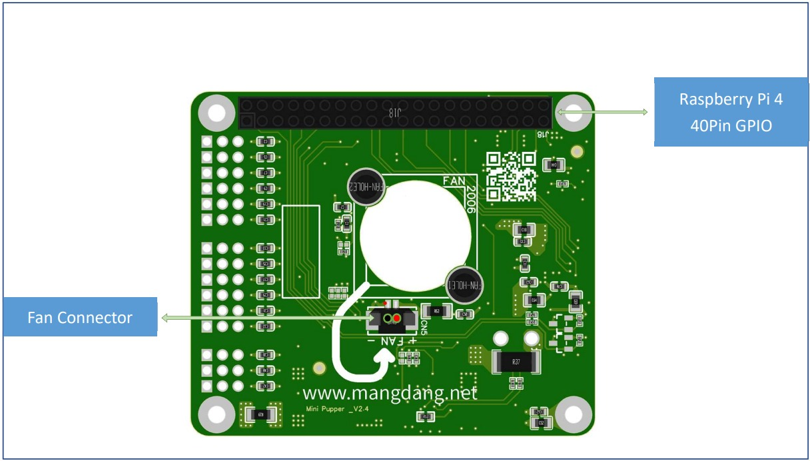

Mini Pupper
ガイド
特徴
ご注文方法
クイックスタートガイド
組立
ソフトウェア校正
ROS2ガイド
機械学習
強化学習(RL)
マルチモーダル生成AI
例
参考文献
Mini Pupperのメカニカルデザイン
プリント基板
PCB設計
上側
下側
FAQ（よくある質問）
Mini Pupper
"
プリント基板
ページのソースを見る
PCB
内容
プリント基板
PCB設計
PCBデザイン
Mini Pupperのカスタムボード設計については、以下の写真を参照してください。 また、詳細な
回路図とデータシートを
見つけることができます。
トップ
サイド

下
側
